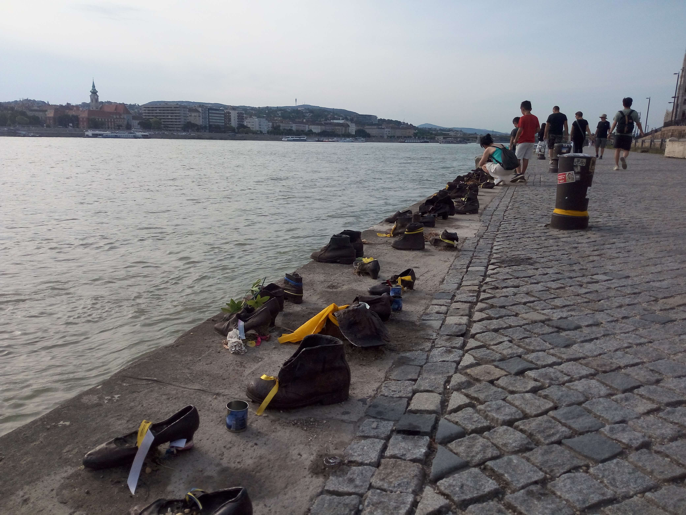

Danube River
Budapest · Hungary
The Danube River is one of the defining features of Budapest, flowing through the heart of the Hungarian capital and separating the historic districts of Buda and Pest. Its banks are lined with remarkable architecture, historic bridges, and famous landmarks that give the city much of its distinctive character.
Walking along the river offers constantly changing views of Budapest, from the impressive Parliament Building to the hills of Buda and the elegant bridges connecting both sides of the city. Whether during the day or under the evening lights, the Danube creates some of the most memorable scenes in the capital. These photographs capture my personal impressions of the river and its surroundings.
My Photo Gallery
Explore my personal travel photographs of the Danube River, its bridges, waterfront, and surrounding landmarks in Budapest.
View All Photos ↗